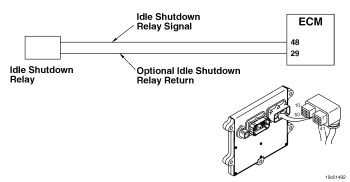

Código de Falha 338
|
| CÓDIGO | RAZÃO | EFEITO |
| Código de Falha: 338 PID: S087 SPN: 1267 FMI: 3/3 LÂMPADA: Âmbar SRT: |
Circuito do Acionador do Relé de Acessórios de Parada de Marcha Lenta do Veículo - Voltagem Acima da Normal ou com Voltagem Alta. Detectado um circuito aberto ou um curto com uma fonte de voltagem no circuito do relé de acessórios de parada do veículo por marcha lenta/barramento de ignição. |
Os acessórios do veículo ou as cargas do barramento da ignição controlados pelo relé de acessórios de parada do veículo por marcha lenta não serão ativados. |
|
 ISM11 CM876 SN - Circuito do Acionador do Relé dos Acessórios de Parada do Veículo por Marcha Lenta
|
O recurso Parada por Marcha Lenta do módulo eletrônico de controle (ECM) possui um parâmetro opcional para um relé dos acessórios de parada. Quando esse parâmetro é ajustado como 'Instalado', o ECM enviar um sinal para energizar o relé e desliga os acessórios do veículo durante eventos de parada por marcha lenta. O circuito de retorno do relé dos acessórios de parada do veículo por marcha lenta varia dependendo do OEM. O circuito de retorno pode ser ligado no ECM através do Retorno do ECM (Geral) ou conectado diretamente no massa. Consulte o manual de serviços do OEM para obter a configuração de aterramento.
A localização do relé de parada por marcha lenta varia dependendo do OEM. Consulte o manual de serviços do OEM para obter a localização.
Este diagnóstico é executado continuamente quando a chave de ignição encontra-se na posição ON.
O sinal de modulação por largura de pulso (PWM) do relé de parada por marcha lenta é detectado com um valor igual ao da voltagem do sistema pelo ECM quando a voltagem de PWM é desligada.
O ECM monitora o nível de voltagem neste circuito. Se detectar uma voltagem quando o sinal é desligado, ele registrará este código de falha. Esta falha pode ser causada por: